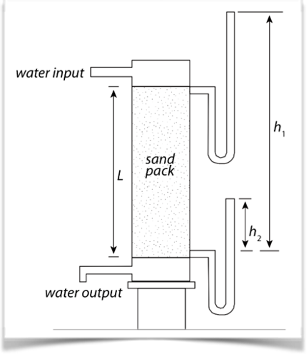
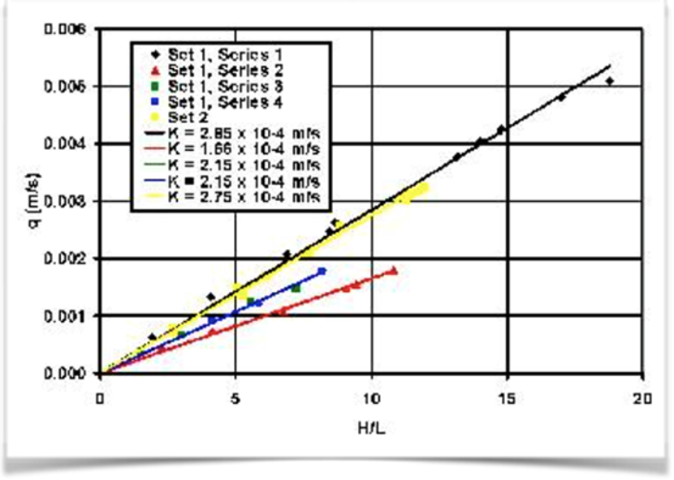
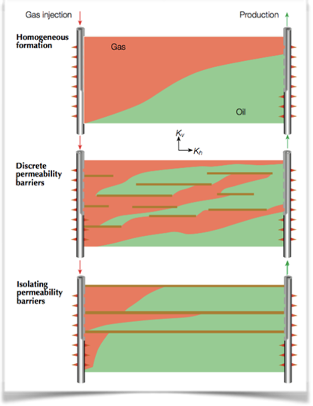
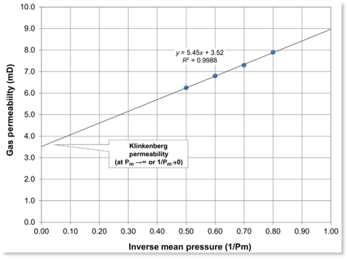

Introduction
Have you ever stuck in the traffic? Had no place to go, and just wait for the traffic gone. This condition is the same situation with the movement of fluid inside reservoir rock. Imagine you are a motorcycle driver inside a stuck traffic as displayed in Figure 1. What can possibly “ease” your movement? The bigger the road, the easier your movement; the less the traffic (less “dense”), the easier you “flow through”; and the higher your speed (differential energy), the faster your movement. These all analogue to permeability.
Usually, we tend to correlate porosity and permeability together. When the porosity is high, so does the permeability, which in the most cases they do and most of the case they do not. To understand permeability is to understand not only the porosity, but also the fluid, and their interaction. Which is why I do not put porosity and permeability together in the same sentence. Plus, if you want to understand the basic things about porosity, you can find that in the previous article.
“When the porosity is high, so does the permeability, which in the most cases they do and most of the case they do not”.
In this short article, we will try to explain permeability from the most basic things. From Darcy Equation, what governs permeability, anisotropy, and Klinkenberg permeability.
Darcy’s Equation
A bit background story on permeability. Permeability is the intrinsic characteristic of rock, which discovered by France gentlemen named Henri Darcy (1856). Who was working as hydraulic engineer, and wanted to understand flow rate of water inside a sand pack, using simple experiment (Figure 2).

He then found out that the flow rate across the sand is affected by its differential pressure between two points, the distance between it, and one intrinsic feature, which shown as different gradient (Figure 3). He concluded that the changed of water flux per area (Q/A) vs hydraulic gradient (HfL) will always constant (gradient=permeability=k).

This last factor is permeability (K), the measurement of connectivity. Or put in the simple words, how easy the fluid will flow across the sand. This is an important factor in reservoir performance, since the rate will be highly affected by how high the permeability is. Later after Darcy, people tried to improve his equation (just like Archie’s). Viscosity is added into the equation, as factor that Darcy simply do not matter, because viscosity of water is 1 centipoise (unit for viscosity).
However, in petrophysics, this cannot oil and (especially) gas are much lighter than water (<1cp). Another interesting point to add, is that “Darcy” is a unit for permeability which we seldom use, due to the fact that 1 Darcy (D) is too big in majority of oil and gas reservoir. In oil and gas industry, people tend to use milliDarcy as unit (1D=1,000mD), simply for a practical use.
Up until now, Darcy’s equation has been used as a way to measure permeability by knowing the differential pressure (ΔP or in this case is Δh, pressure is hydrostatic pressure=ρgh), dimension of the sample (L = Length; and A = Area), and viscosity of the fluid (μ).
Permeability Factors
Now that you know about Darcy Equation, if somebody asked you “what parameters/factors that affect my permeability in reservoir”? You are probably going to answer as per Darcy’s equation. It was pressure, viscosity, etc. However, that was right and also wrong. Here is why:
We knew from previous about porosity, that pore throat plays a big part in determining rock permeability. So the answer to that question is: pore throat, or you also can say grain size. Not pressure, viscosity, or length. Those parameters in Darcy such as pressure, viscosity, length, and permeability, are what determine the flow rate, where permeability becoming a “factor” not an affected variable.
So, if we are talking about what affects permeability, we could not take it from Darcy’s equation. That was correct mathematically, but wrong in petrophysical logic.
Permeability Anisotropy
Another interesting property that Permeability has but Porosity does not, is anisotropy. Permeability is a vector, while porosity is scalar. Meaning, porosity will always be the same no matter what the direction is (isotropic), while permeability will not (anisotropic). Permeability measurement in horizontal (Kh); parallel to bedding plane, will always higher than vertical measurement (Kv).
This property makes permeability extremely important, not only because it determines the rate of the fluid but also its heterogeneity. This is a determining factor, especially when dealing with increasing recovery factor of one field. A good understanding about permeability anisotropy in a field scale is fundamental (Figure 4). With a high vertical permeability bottom aquifer could be connected to hydrocarbon zone. Making its recovery less, as more water comes from bottom aquifer
“Porosity will always be the same no matter what the direction is (isotropic), while permeability will not (anisotropic).”

Klikenberg Permeability
When talking about permeability measurement in core sample, we often received the data from RCA (Routine Core Analysis). The permeability measurement is using air/ nitrogen as the fluid and measured at ambient condition. At that time, it was considered to be a reliable measurement for permeability, until in 1941, Klinkenberg showed that this was wrong. He showed that air permeability will always be higher than liquid permeability.
A simple explanation is that the gas is compressible fluid. Unlike liquid such as water (which is incompressible), properties of the gas will highly depend on the pressure acting on it. That is why Klinkenberg saw discrepancies between liquid permeability vs air permeability. Because in ambient condition vs reservoir condition, the pressure will not affect liquid. While on the other hand, gas or air in ambient condition vs reservoir condition will be very different.
This was meant to simulate the condition where gas can be liquid, when the pressure is really high.

Klinkenberg proposed an approach to solve this by plotting multiple measurement of permeability on different pressure (Figure 5). Then plotting of the mean inverse pressure vs permeability is to see the trend where we then can extrapolate the trend to inverse mean pressure equals to zero (which means pressure equals to infinity).
This was meant to simulate the condition where gas can be liquid, which is a very high-pressure condition where the pressure close to infinity. There it is, the very basic idea of Klinkenberg Permeability correction.